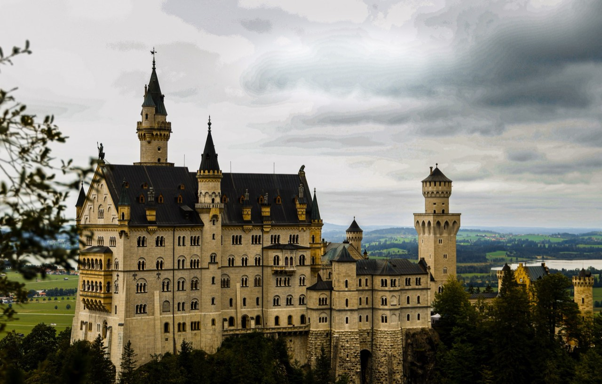
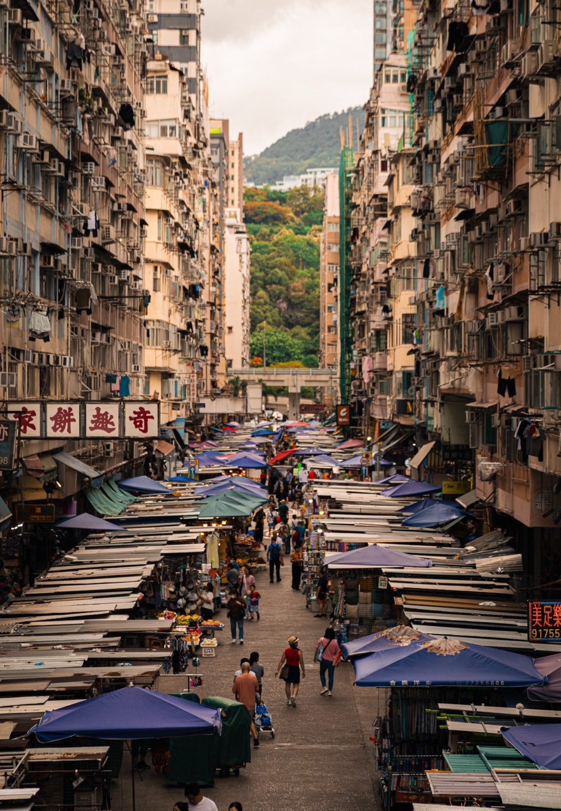
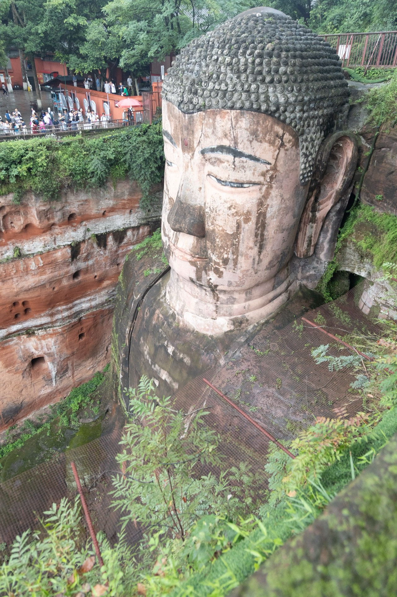

Neuschwanstein Castle
Bavaria, Germany, August 2024

One leads back to the trip it was made on, the other on to the place, for your own visit. Open any photograph to see how it was made.

Bavaria, Germany, August 2024

Yamanashi, Japan, January 2025

Hong Kong, May 2025

Sichuan, China, June 2026

Barcelona, Spain, July 2026